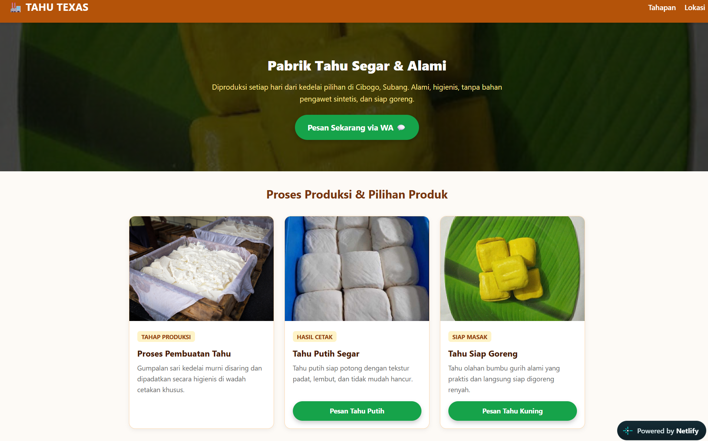
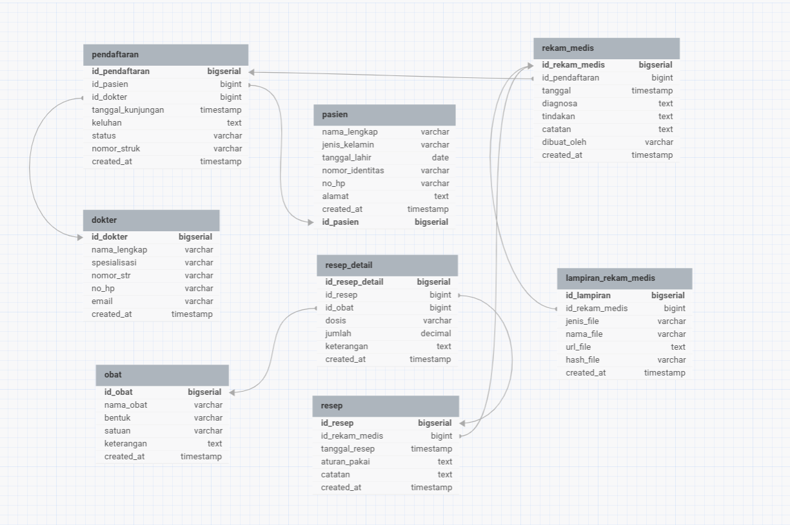
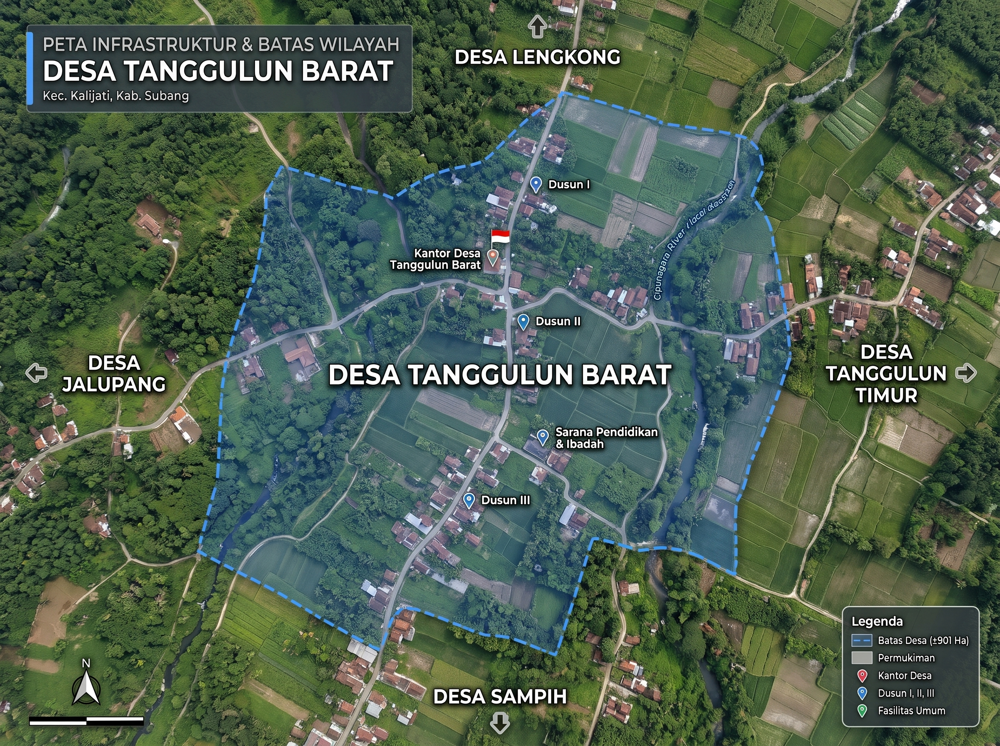

Mahasiswa Teknik Komputer & Jaringan | Web & Database Developer
Saya adalah mahasiswa Teknik Komputer dan Jaringan di Universitas Mandiri Subang yang memiliki minat besar dalam pengembangan web, rekayasa database, serta infrastruktur jaringan. Terbiasa membangun sistem informasi berbasis web, integrasi pembayaran digital, dan konfigurasi perangkat jaringan.
Program Studi Teknik Komputer dan Jaringan
Fokus pada rekayasa jaringan komputer, administrasi server, pengembangan aplikasi web, dan perancangan basis data relasional.
Pendidikan Menengah Kejuruan Teknik Kendaraan Ringan
Menyelesaikan pendidikan tingkat menengah atas dengan dasar keterampilan teknis dan kesiapan kerja.
HTML5, CSS3, Bootstrap 5.3, PHP, JavaScript, serta integrasi API dan QRIS.
Perancangan ERD, MySQL, phpMyAdmin, HeidiSQL, dan optimasi query SQL.
MikroTik RouterOS, Cisco Packet Tracer, GNS3, VirtualBox, dan manajemen jaringan lokal.

Pengembangan website profil dan sistem pemesanan dengan pembayaran QRIS untuk Pabrik Tahu Texas di Desa Majasari.

Perancangan arsitektur database relasional (ERD & MySQL) untuk pengelolaan data pasien, rekam medis, dan jadwal dokter.

Digitalisasi peta wilayah dan pendataan titik lokasi fasilitas umum untuk Desa Tanggulun Barat.